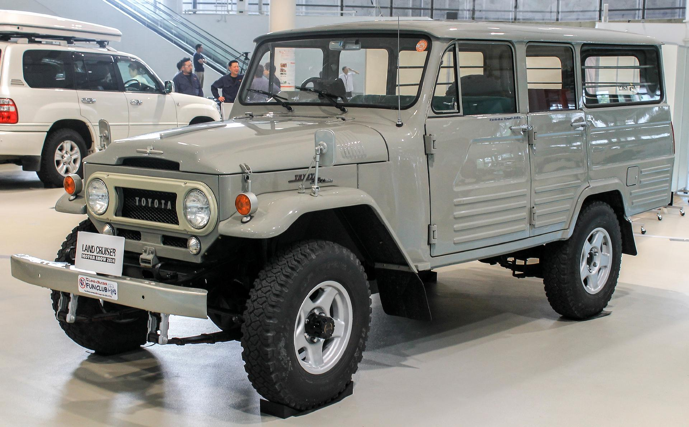
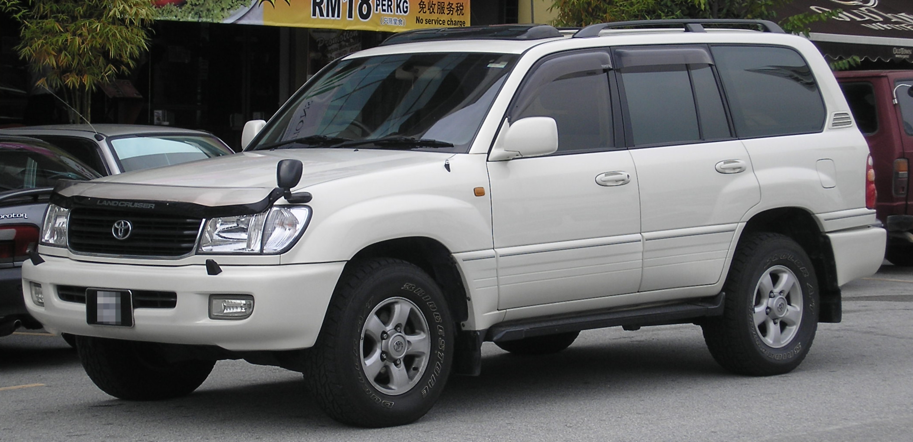
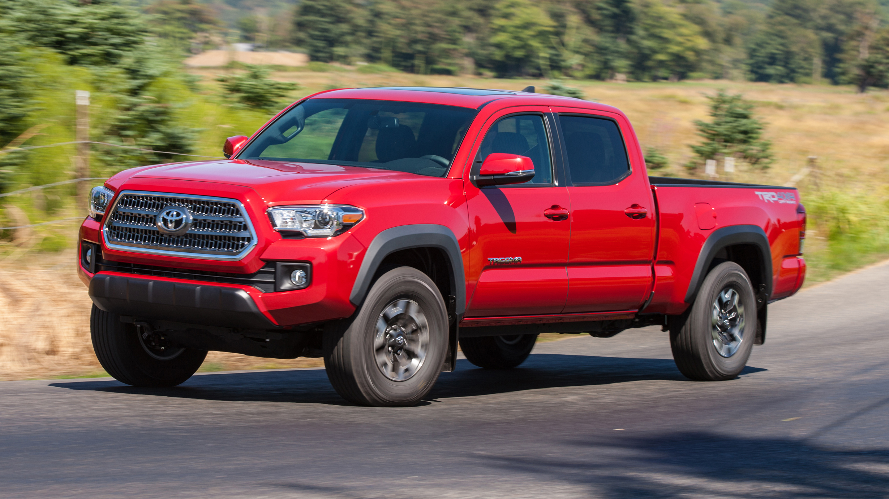
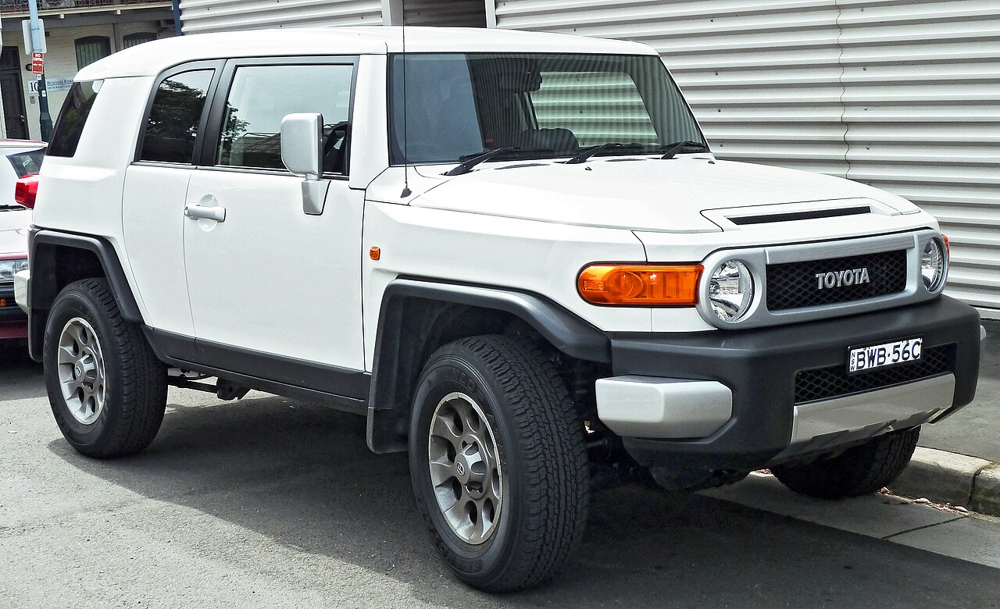
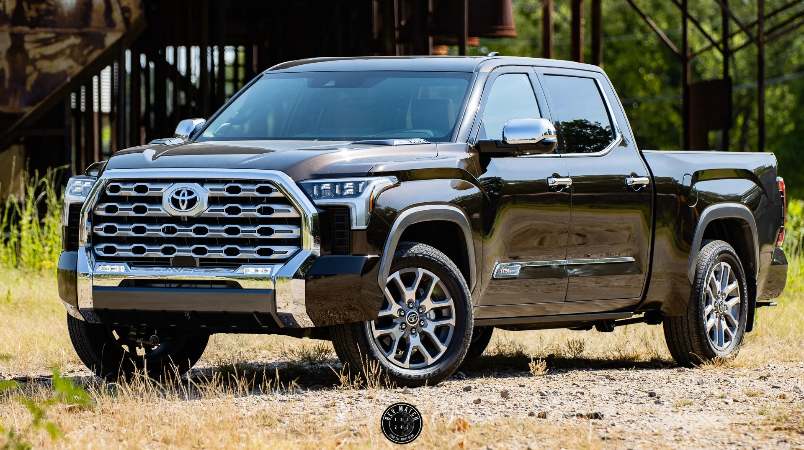

Off-Road Legends

Land Cruiser 40 Series
The legendary FJ40 - the vehicle that built Toyota's off-road reputation worldwide. Simple, rugged, and nearly indestructible.

Land Cruiser 100 Series
The luxury off-roader that combined legendary reliability with comfort. The choice of the UN, NGOs, and overlanders.

Toyota 4Runner
Body-on-frame SUV that refuses to die. Still built with rugged simplicity, beloved by off-road enthusiasts.

Toyota Tacoma
The mid-size pickup that dominates off-road culture. Countless TRD Pro editions conquer trails worldwide.

Toyota FJ Cruiser
Retro-styled off-roader inspired by the FJ40. Built from 2006-2022, it developed a cult following.

Toyota Tundra
Full-size American pickup, proving Toyota could compete in the heart of truck country.
The Land Cruiser is often described as "the vehicle that can get you there and bring you back." It's trusted by the United Nations, the Australian outback, and adventurers on every continent. Its legendary reliability means you'll see 40-year-old Land Cruisers still working hard in developing countries.